Integração 2026
Seu primeiro dia na Deltec começa aqui.
DELTEC INDUSTRIAL — VALINHOS/SP
ABERTURA
à Deltec
ABERTURA
ABERTURA
ABERTURA
01
Quem somos, nossa história, mercados e clientes
A DELTEC · 01
A Deltec é dirigida pelos sócios José Fernando Palaro, que lidera a empresa desde sua fundação, e Marlon Griesang, que, desde 2016, tem contribuído para um crescimento expressivo da empresa.
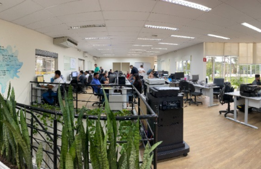
EXPERIÊNCIADesde 1986de experiência no mercado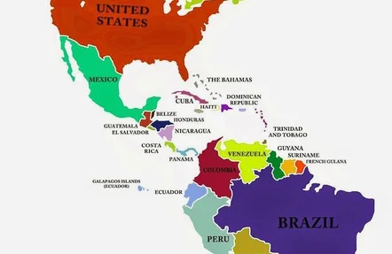
PRESENÇABrasil, Argentina, México e PeruEquipe de vendas em todo o Brasil, Argentina, México e Peru.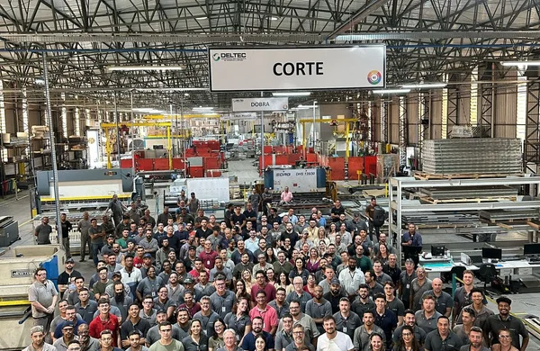
NOSSO TIMEPessoas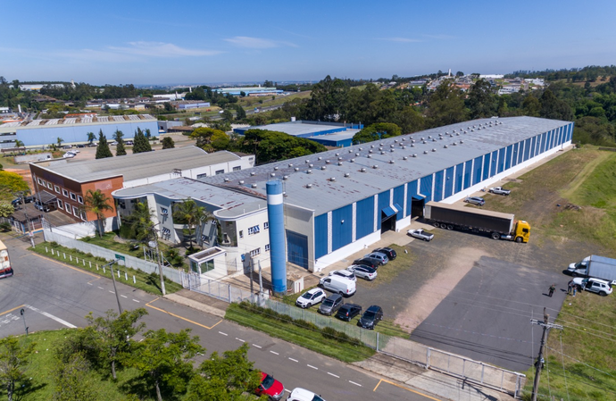
OPERAÇÃOProdução verticalizada& Engenharia voltada à inovaçãoA DELTEC · 01
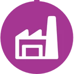
Filial em Sumaré-SP. Corte e dobra/caldeiraria.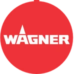
Nova parceria tecnológica.Veja nossa estrutura! Aponte a câmera do celular para o QR Code ou clique aqui.
A DELTEC · 01
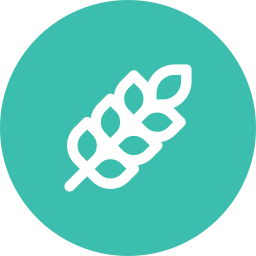
Agroindústria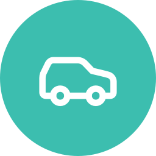
Automotivo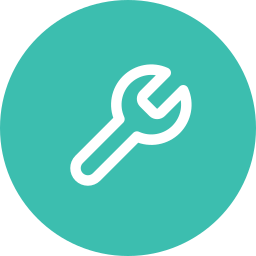
Metalmecânico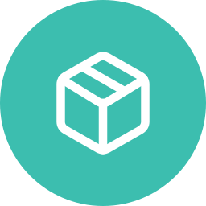
OutrosA DELTEC · 01
CLIENTES
+ de 1.000
clientes atendidos e satisfeitos com as soluções Deltec
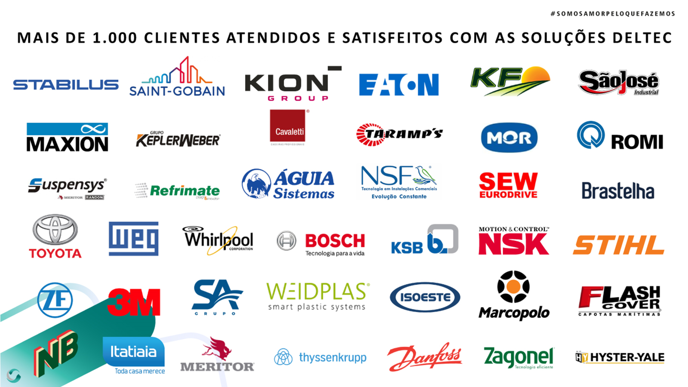
SEIS OBJETIVOS. UMA DIREÇÃO. UMA DELTEC MAIS FORTE.
QUEM LIDERA · 03
QUEM LIDERA · 03
04
Kit de boas-vindas, comunicação, vestimenta e crachá
SEUS PRIMEIROS DIAS · 04
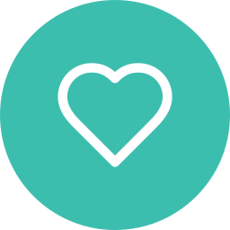
Squeeze DeltecUma garrafa de água personalizada, pensada para promover o bem-estar e a hidratação.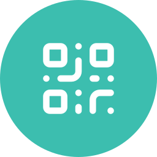
QR Code das ComunidadesVocê recebe um QR Code com acesso às Comunidades Deltec, para facilitar a integração e o engajamento com as novidades.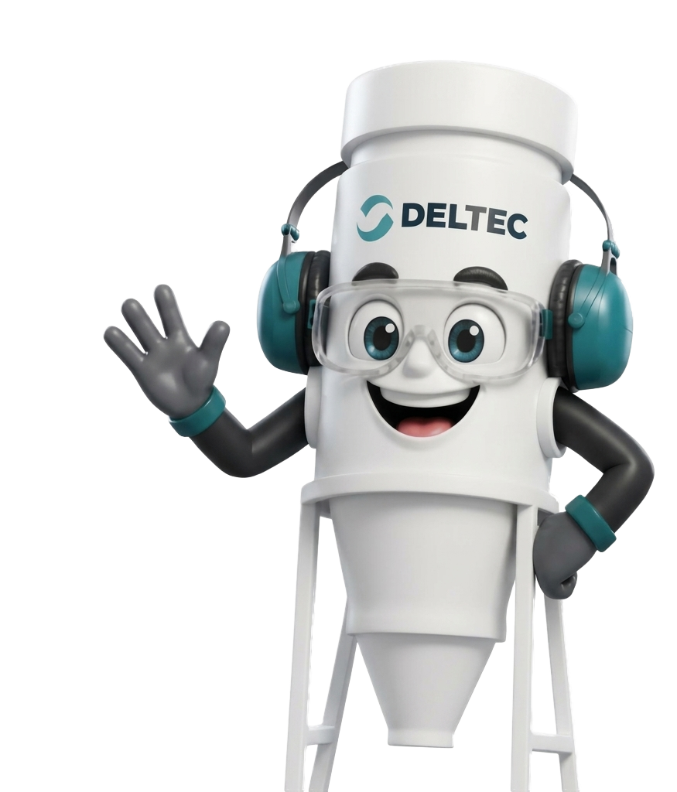
SEUS PRIMEIROS DIAS · 04
Entre na comunidade da Deltec e fique por dentro das novidades.
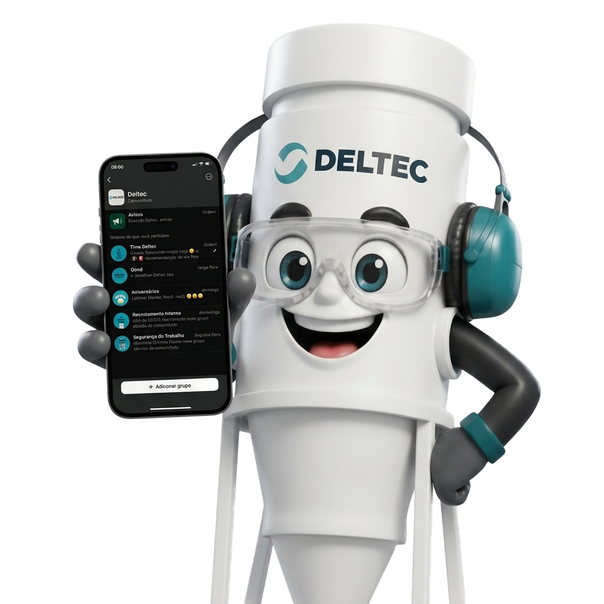
Uma maneira prática e rápida de se manter informado sobre o dia a dia da empresa.
SEUS PRIMEIROS DIAS · 04
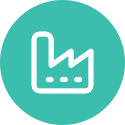
FábricaUtilizam camiseta Deltec e calça apropriada para as atividades no ambiente fabril.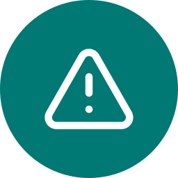
Atenção: roupas muito informais (camiseta de time ou partido politico, shorts, regatas ou chinelos) não são recomendadas para o ambiente corporativo.SEUS PRIMEIROS DIAS · 04
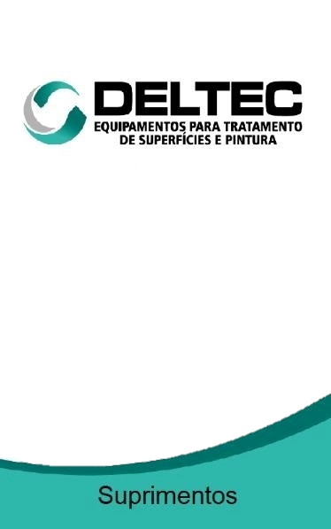
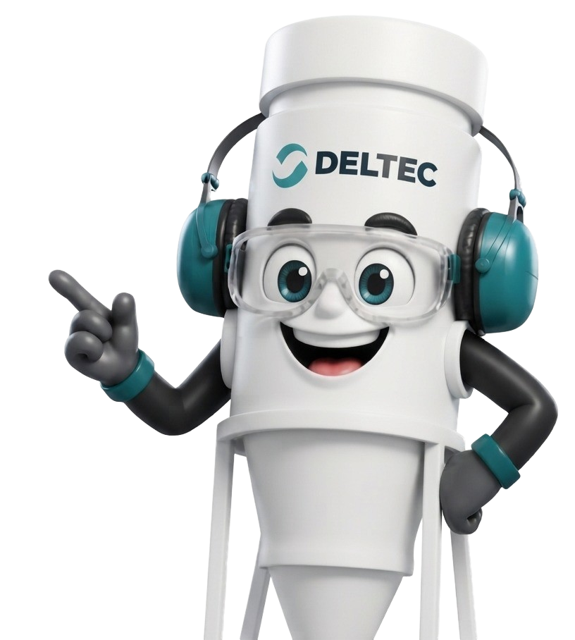
Entregue na Integração. Todo colaborador pode circular com o crachá nas dependências da empresa durante a jornada de trabalho.
RH
É responsável por entregar o crachá e por informar horários fora da jornada de trabalho para liberação.
FACILITIES
É responsável pela liberação dos crachás nas áreas de acesso e por perdas, extravios e confecções.
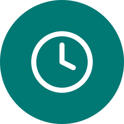
Fora do horário de rotina? Informe o RH.Perda ou extravio: será cobrada uma taxa para a 2ª via.
05
Ponto, atestados, horas extras, portal Vibe, salário e férias
JORNADA, PONTO E SALÁRIO · 05
Registram o ponto: CLT e aprendizes.
Isentos de registro: colaboradores em grau de confiança.
SEUS 4 REGISTROS DIÁRIOS
Entrada na jornada de trabalho
Saída para a refeição principal
Retorno da refeição principal
Fim da jornada de trabalho
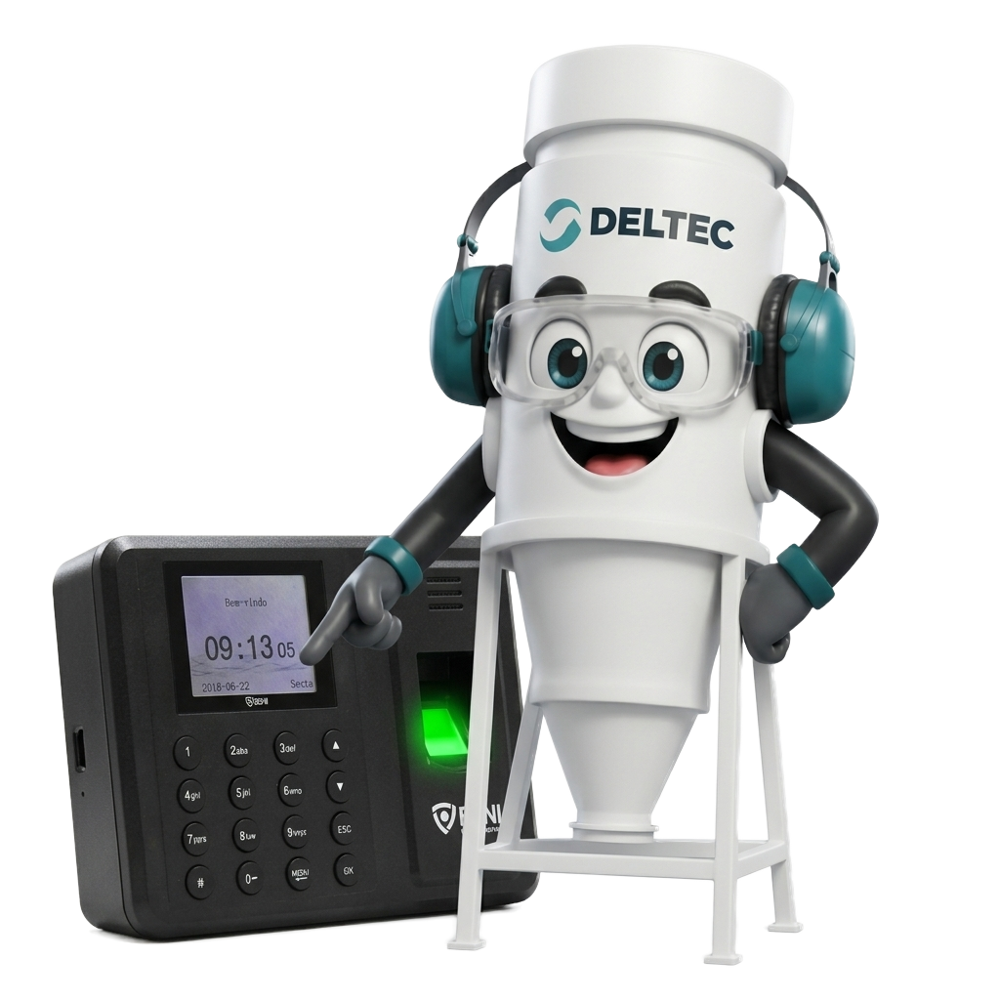
JORNADA, PONTO E SALÁRIO · 05
Ajuste de ponto
A solicitação de ajuste deve ser feita diretamente no sistema Vibe.
Ausência durante a jornada
Se precisar se ausentar da Deltec durante a jornada, registre a saída e o retorno no sistema.
APURAÇÃO DO PONTO
O período de apuração vai do dia 21 de um mês ao dia 20 do mês seguinte.
Dia 21
mês atual
Dia 20
mês seguinte
JORNADA, PONTO E SALÁRIO · 05
ATESTADO NO VIBE EM ATÉ
48 horas
após a consulta. Os atestados devem ser incluídos no Vibe dentro desse prazo.
O não comparecimento ao posto de trabalho, sem aviso ao líder e sem atestado ou documento da falta ou do atraso, implica desconto em folha de pagamento.
O RH faz um acompanhamento sobre o estado de saúde dos colaboradores.
Consulte a política completa: Política de abonos e faltas
JORNADA, PONTO E SALÁRIO · 05
Você recebe o convite de acesso ao Vibe um dia após a sua integração, no e-mail pessoal informado durante o processo.
Verifique sua caixa de entrada e a pasta de spam. Em caso de dúvidas, entre em contato com a Laryssa.
No portal você acessa seu holerite, solicita férias, inclui atestados e acompanha o status das suas solicitações.
Atestados e solicitações são encaminhados ao seu líder imediato para aprovação.
JORNADA, PONTO E SALÁRIO · 05
Abra uma nova solicitação no Vibe.
Selecione o tipo: Atestado, Doação de Sangue ou Declaração de Acompanhamento de Dependente.
Informe a data correspondente.
Anexe o documento necessário.
Clique em “Enviar” para concluir a solicitação.
Acompanhe o status da aprovação no sistema. A aprovação é feita pelo seu líder imediato.
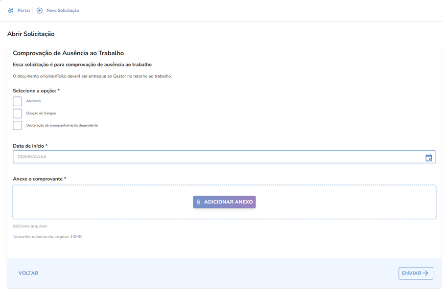
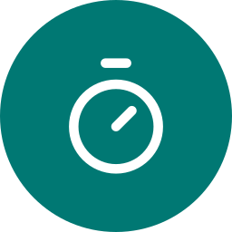
Prazo: inclua o atestado em até 48 horas após a consulta.JORNADA, PONTO E SALÁRIO · 05
PAGAMENTO
Dia 05
Pagamento mensal do salário. Nele são descontados:
ADIANTAMENTO
Dia 20
40%
do salário
Liberado só depois dos seus primeiros 30 dias de trabalho.
Sobre ele são retidos o Imposto de Renda e a parte proporcional do e-Consignado.
O primeiro adiantamento é pago a partir do segundo mês.
e-Consignado: empréstimo com parcelas descontadas direto do salário.
JORNADA, PONTO E SALÁRIO · 05
NOTA FISCAL
2 dias
é o prazo de antecedência para enviar a nota fiscal ao RH.
A nf deve ser emitida no dia 01 de cada mês para pagamento no dia 05 ou de acordo com o calendário vigente. Os benefícios são descontados nessa etapa.
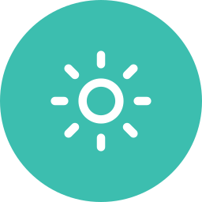
Após 12 meses de contrato, o PJ tem direito a 30 dias de recesso. As datas devem ser combinadas com a liderança, e o RH deve ser comunicado.
JORNADA, PONTO E SALÁRIO · 05
FÉRIAS
30 dias
Após 12 meses de trabalho, você tem direito a 30 dias de férias.
Solicite no Vibe, com aprovação do líder imediato e do RH, com no mínimo 30 dias de antecedência da data de início.
Um período com no mínimo 14 dias; os outros com no mínimo 5 dias.
Só pode ser feita no primeiro período, até o limite de 10 dias.
Inclui salário + 1/3 e é feito até 2 dias antes do início das férias.
JORNADA, PONTO E SALÁRIO · 05
É o período de 12 meses de trabalho que dá direito às férias. A quantidade de dias de férias varia conforme as faltas injustificadas nesse período, como determina a legislação trabalhista.
| Faltas injustificadas | Dias de férias |
|---|
06
#SOMOSAMORPELOQUEFAZEMOS
BENEFÍCIOS · 06
| Benefício | Valor | Quando / como | Quem tem direito |
|---|
BENEFÍCIOS · 06
Artigo 4º | Lei nº 7.418/85
1º TURNO
Último dia útil do mês
O saldo cai no seu cartão de transporte. O valor é calculado pelos dias trabalhados.
2º TURNO
1º dia útil do mês
O pagamento é feito no cartão Flash Benefícios.
COMO O VALOR É CALCULADO
A VT Soluções carrega o saldo conforme os dias úteis trabalhados.
Faltas e atestados de dia inteiro são descontados.
Trabalho em sábado ou domingo é pago.
Sobrou saldo do mês anterior? Só é carregado o valor necessário.
Até o dia 15 Peça cancelamento ou ajuste do VT até o dia 15 de cada mês.
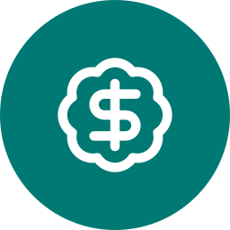
Recém-chegado? Suas primeiras passagens são pagas via Pix em até 3 dias após o início.BENEFÍCIOS · 06
VALOR MENSAL
creditado no cartão Flash
PAGAMENTO
Dia 15
O pagamento é feito no primeiro mês da data de admissão.
Colaboradores do 2º turno. O benefício foi criado para oferecer suporte financeiro ao deslocamento até o trabalho.
Como não há transporte público nesse horário, é previsto o uso de veículo próprio, como carro ou moto.
BENEFÍCIOS · 06
O desconto da refeição é feito conforme a faixa salarial do colaborador. A mesma regra vale para os colaboradores de campo.
Comitê do Refeitório | Reporte | Sugestões e melhorias
Consulte: Política do refeitório
BENEFÍCIOS · 06
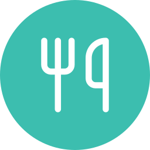
A empresa disponibiliza refeitório interno, com desconto em folha conforme a faixa salarial.
Pode ser concedido o benefício de alimentação/refeição, que substitui o refeitório. Não é permitido usar os dois ao mesmo tempo.
Os descontos seguem os mesmos critérios nas duas modalidades, mediante autorização do colaborador.
É proibido o uso indevido, sujeito a medidas disciplinares. As condições seguem as políticas internas e fazem parte do contrato de trabalho.
Consulte: Política do refeitório
BENEFÍCIOS · 06
VALOR
por mês no cartão Flash
CARREGAMENTO MENSAL
Todo dia 1º
Todos os colaboradores no regime CLT e estágio.
Aplicativo, em redes credenciadas.
BENEFÍCIOS · 06
VALOR
por mês, para quem segue as regras do programa
CARREGAMENTO MENSAL
Todo dia 15
Todos os colaboradores no regime CLT que seguirem as regras do programa.
Aplicativo Flash, em redes credenciadas.
Consulte: Regras do Programa de Assiduidade
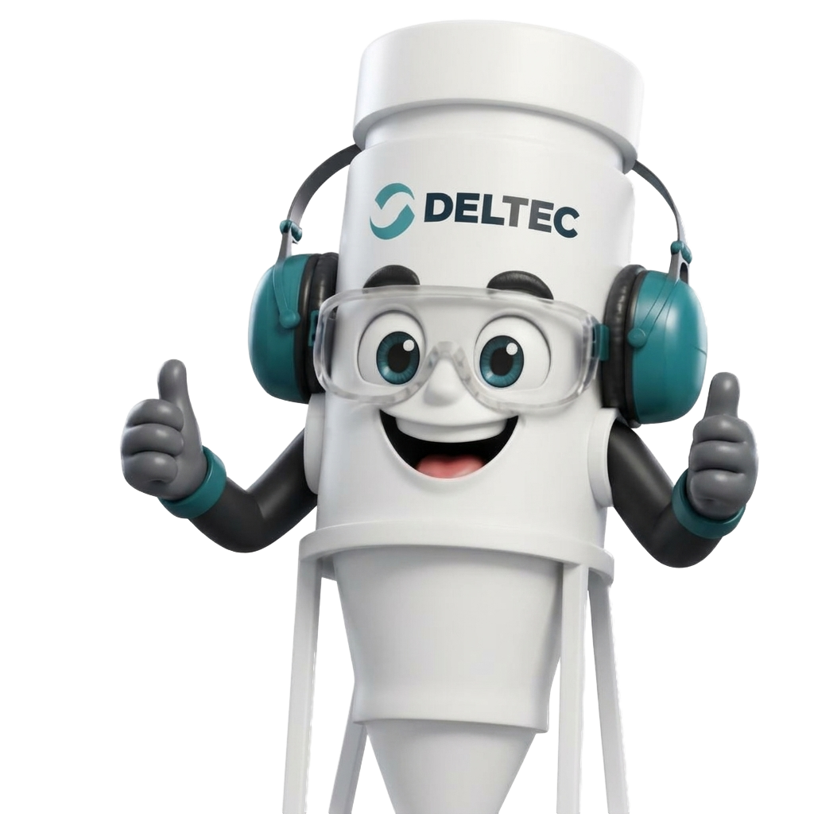
BENEFÍCIOS · 06
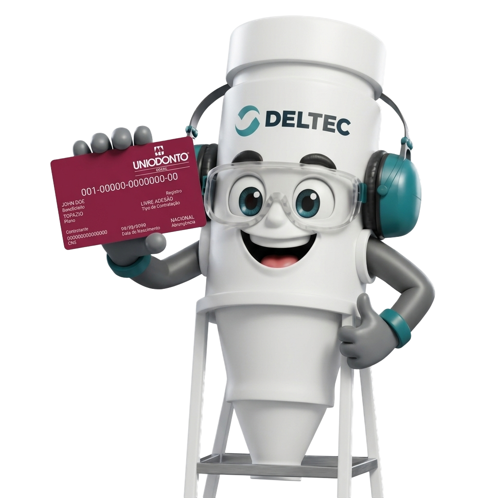
VALOR
Uniodonto Campinas · Região de Campinas
A inclusão de dependentes pode ser feita com qualquer grau de parentesco.
O prazo de fidelidade é de um ano após a data da inclusão (12 meses).
Procedimentos simples e complexos, como limpezas, restaurações, próteses, exames, cirurgias e urgências. Todos os planos da Uniodonto Campinas têm cobertura nacional e atendimento de emergência 24h.
PJ: os valores serão descontados na respectiva nota fiscal.
BENEFÍCIOS · 06
VALOR
Conforme salário e faixa etária
Regra aplicável a Campinas e região
É permitida a inclusão de filhos e cônjuges, mediante apresentação de documentação comprobatória.
A regra é aplicável a Campinas e região.
Os valores referentes à utilização do plano são descontados em folha de pagamento. O limite máximo de desconto mensal por colaborador é de . Se esse valor for ultrapassado, a Deltec assume o excedente.
PJ: os valores serão descontados na respectiva nota fiscal.
BENEFÍCIOS · 06
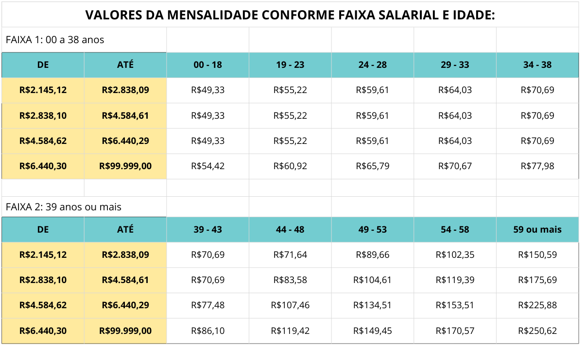
| Procedimento | Valor |
|---|
Retorno gratuito se ocorrer em até 30 dias da consulta anterior.
BENEFÍCIOS · 06
VALOR
Conforme faixa etária
Mensalidade por faixa etária (veja a tabela no próximo slide)
É permitida a inclusão de filhos e cônjuges, mediante apresentação de documentação comprobatória.
Os valores referentes à utilização do plano são descontados diretamente em folha. Aplica-se a todos os colaboradores.
Colaboradores PJ podem aderir ao plano de saúde após 6 meses de prestação de serviços à empresa.
PJ: os valores serão descontados na respectiva nota fiscal.
BENEFÍCIOS · 06
| Faixa etária | Titular | Dependente |
|---|
Valor que você paga cada vez que usa o plano, descontado em folha.
| Procedimento | Valor |
|---|
Consulta eletiva: . Retorno gratuito se for em até 30 dias da consulta anterior.
BENEFÍCIOS · 06
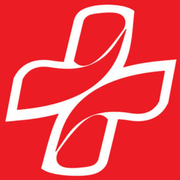
FARMAHELP
até
O colaborador tem direito a até , descontado em folha.
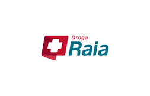
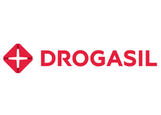
DROGA RAIA E DROGASIL
Desconto exclusivo
Desconto em medicamentos exclusivo para funcionários da Deltec, sem desconto em folha.
PJ: os PJs também têm direito a este benefício, com desconto na nota.
BENEFÍCIOS · 06
Cadastre-se no aplicativo e aguarde a liberação do RH.
Escolha o seu plano. O valor será descontado em folha de pagamento.
Você também pode incluir dependentes. O pagamento deles é feito diretamente pelo app, via cartão de crédito ou débito.
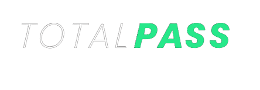
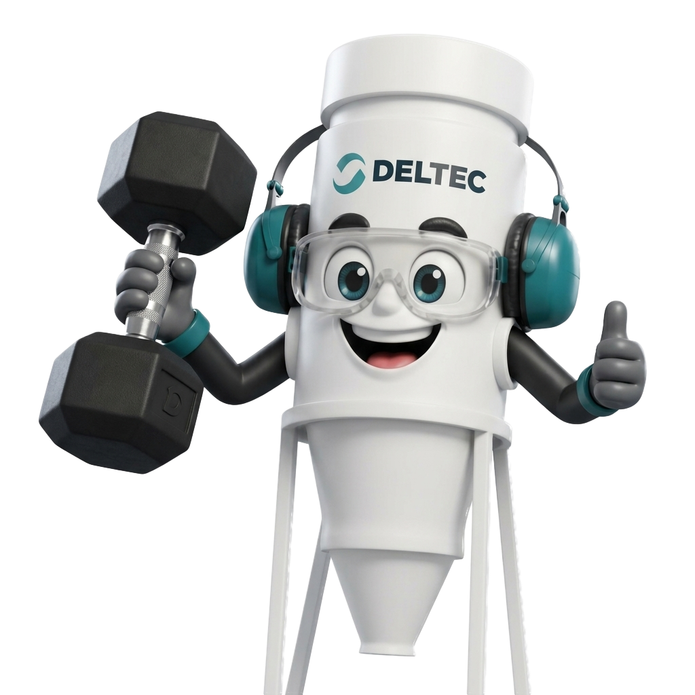
BENEFÍCIOS · 06
A Deltec fez parcerias com instituições renomadas para oferecer descontos exclusivos em cursos de graduação e pós-graduação aos colaboradores.
INSTITUIÇÕES PARCEIRAS
MODALIDADES DISPONÍVEIS
O benefício também é estendido a cônjuges e filhos, com condições especiais para o desenvolvimento acadêmico da família.
BENEFÍCIOS · 06
A Deltec firmou parcerias com instituições de prestígio para oferecer descontos exclusivos em cursos de idiomas para seus colaboradores.
INSTITUIÇÕES PARCEIRAS
MODALIDADES DISPONÍVEIS
O benefício também é estendido a cônjuges e filhos, com condições especiais para o desenvolvimento acadêmico da família.
07
Recrutamento interno e a trajetória de quem já está aqui
DESENVOLVIMENTO · 07
Retire o formulário de candidatura com o RH.
Preencha o formulário de forma completa e precisa.
Obtenha a aprovação do seu líder antes de enviar.
Entregue o formulário preenchido, dentro do prazo estabelecido, para o RH.
Para formalizar: entregue ao RH o formulário preenchido e assinado e o currículo atualizado.
QUEM PODE SE CANDIDATAR
6 meses
no cargo atual, além de atender aos requisitos da vaga. Verifique os critérios antes de iniciar o processo.
O salário para a vaga será compartilhado somente com os candidatos aprovados durante o processo seletivo.
08
Atendimento, indicações e a sua opinião
RH & VOCÊ · 08
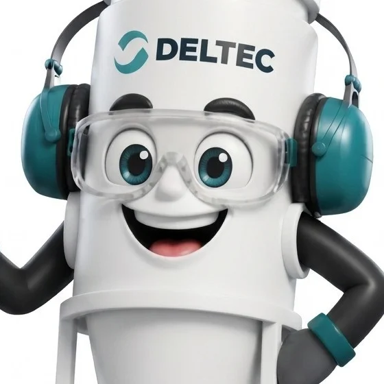
RH & VOCÊ · 08
RH & VOCÊ · 08
Gostaríamos de saber sua opinião sobre nossa integração! Sua avaliação é essencial para melhorarmos continuamente.
Como responder: basta apontar a câmera do seu celular e responder o questionário!
Obrigado pela sua atenção!
Fico à disposição para qualquer dúvida.